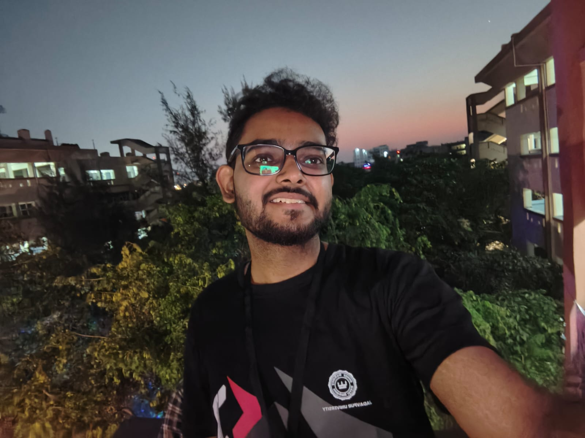
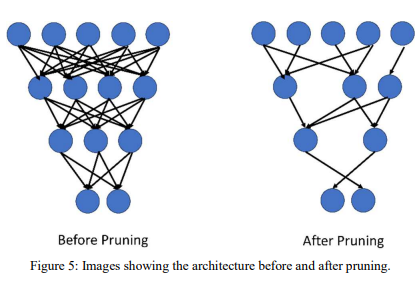
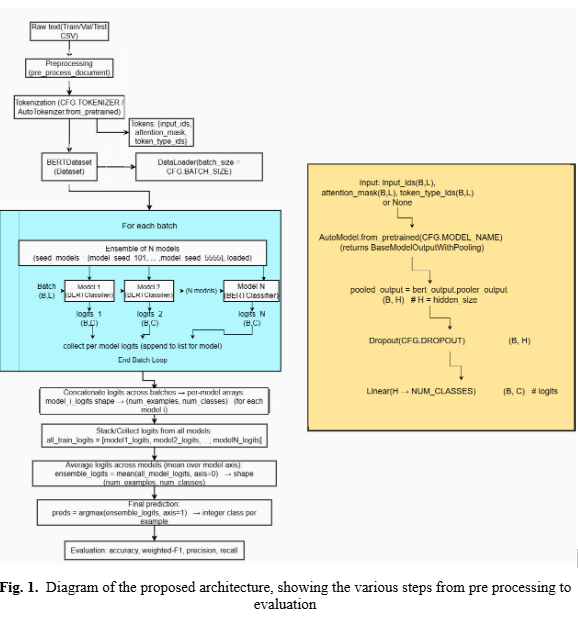
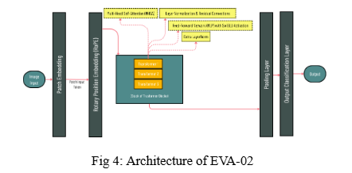
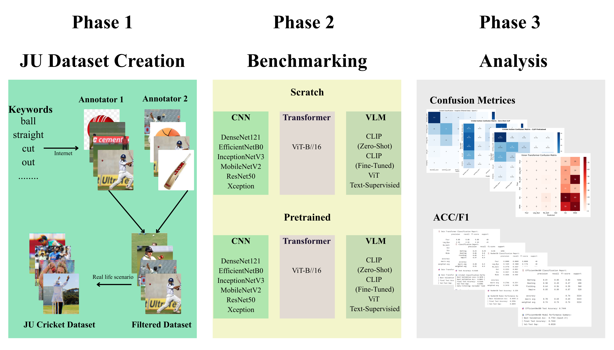

Researcher in Computer Vision, NLP, and Self-Supervised Learning working on foundation models, multimodal AI, and real-world deployment systems.
I am an undergraduate researcher at Jadavpur University collaborating with multiple institutions including IIT Bombay, IIT Patna, IIIT Bangalore, and IISER Kolkata. My research focuses on scalable representation learning, multimodal alignment, and foundation models for real-world applications. I work across Computer Vision and Natural Language Processing, with particular interest in self-supervised learning, transformer architectures, multimodal fusion, and efficient deployment of deep learning systems in resource-constrained environments. My current work explores hyperspectral foundation models, large language model alignment, and generative AI evaluation systems, with applications spanning remote sensing, social media analysis, and sports analytics.

Aritra Mondal, Utathya Aich, Pawan Kumar Singh
IEEE RAIT 2025
Proposed a two-stage vehicle classification framework integrating EfficientNetB3 with focal loss and magnitude-based pruning to address class imbalance and computational constraints. Achieved 98.7% and 97.3% accuracy on real-world datasets while significantly reducing model size. Designed for real-time deployment in intelligent transport systems and scalable urban analytics.

Naireet Sadhukhan, Sagnik Samanta, Sauhardya Hazra, Aritra Mondal, Pawan Kumar Singh
ICDMAI 2026 — 2nd Best Paper
Introduced a logits-level stacking ensemble of multiple BERTweet models pretrained on large-scale Twitter corpora. Demonstrated improved robustness on noisy and imbalanced social media datasets, achieving 88.67% and 97.17% accuracy. The approach highlights the effectiveness of ensemble diversity in transformer-based NLP systems.

Debarun Patra, Deepsayan Das, Aritra Mondal, Pawan Kumar Singh
ICDMAI 2026
Conducted a large-scale comparative study of transformer architectures (EVA-02, BEiTv2, RT-02) and CNN-based models (ConvNeXtV2) using advanced augmentation techniques. Achieved up to 99.33% accuracy on Sports-102 datasets, demonstrating the superiority of next-generation transformers in fine-grained pose understanding tasks.

Utathya aich, Aritra Mondal, Marcin Wozniak, Muhammad Fazal Ijaz, Pawan Kumar Singh
Science Report, Under Review
Developing a large-scale benchmark dataset for cricket action classification, accompanied by a comprehensive evaluation of deep learning architectures including CNNs and transformer-based models. Focuses on robustness under real-world distortions and improving classification accuracy in sports analytics pipelines.
I am open to work and learn more about the world of Computer Vision, Natural Language Processing, and Self-Supervised Learning. If you feel interested in my work please feel free to connect with me.
Email: aritramondal503@gmail.com
Location: Kolkata / Asansol, India